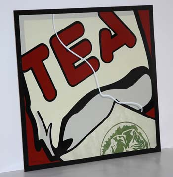

Kesica čaja - Novi život
Čaj u kesicama nastao je pre oko jednog veka. U početku su kesice služile da se uzorci čaja pošalju mušterijama. Ideja se primila, i oko 1920. čaj u kesicama počeo je industrijski da se proizvodi. To je bila neka vrsta revolucije.
Međutim, vremenom su proizvođači počeli da stavljaju sve nekvalitetniji čaj u kesice - ostatke od lišća čaja prodavanog posebno, odnosno takozvanu čajnu prašinu.
Sada je na redu nova revolucija. Niz proizvođača, a vrlo uskoro i Lipton, počeo je da u kesice pakuje celo lišće čaja. I ne samo to - kesice će biti piramidalnog oblika koji omogućava da aroma čaja što bolje dođe do izražaja. Iz istog razloga, kesice više neće biti papirne, nego od nylon mesha, šta god to bilo, a neki koriste i muslin i druge materijale.
Inače, prodaja čaja je u Americi četiri puta veća nego što je bila pre deset godina, i očekuje se da će svake godine rasti za deset posto. To je povezano sa prodajom flaširanog ledenog čaja i rastućim uverenjem da je čaj, posebno zeleni, dobar za zdravlje.
Sve ovo piše Njujork Tajms prošle nedelje. Tekst je danima na listi most emailed tekstova, što pokazuje koliko interesovanje vlada za ovu inovaciju.
Ja najviše pijem zeleni čaj. Sviđa mi se, a i ako sva istraživanja kažu da je najbolji, onda mi je to i najsmislenije. Mada čajevi od brižljivo skupljanog bilja po va brdima i planinama imaju poseban status.
Komentari
Kod mene samo čajevi u rinfuzi. Kesice su zabranjene. Ujutru se pije crni sa sedam ukusa, predveče rooibos a tokom dana zeleni razni.
čajopija | 20.09.06 16:13
Ja isto pijem caj, moj je zeleni sencha(tako nekako) sa tostiranim pirincem i jos nekim tako zrncima, ne da je to dobro!
Obavezno Kitten | 20.09.06 18:35
Ja ne koristim kesice. Kuci nikad. Turski crni, jednom godisnje ga ili dovlacim sa Bosfora, ili saljem nekog da silazi tamo :), zeleni...hm, pa nisam neki ljubitelj (a ono znam da je zdrav)...ali zato na majcinu dusicu i bosiljak uvek slozim onu facu ko na reklamama za decije sampone :)))
etotako | 20.09.06 19:11
Moj ovogodišnji hit je hladan zeleni čaj sa livadskim medom, ali baš hladan, onako k'o led. Neki od vas su ga probali na čajanci, mislim, pravo je letnji. :)
 ubipacijentic | 21.09.06 06:07
ubipacijentic | 21.09.06 06:07
Ja jesam. I tople i hladne. Odlicno
La Lara | 21.09.06 08:44
hej, ja pijem caj samo kad sam bolesna, al sam ipak procitala tekst.
Super je caj, al ga se nikako ne setim. Jel kafa izasla iz mode?
organizam | 22.09.06 07:08
Kafa se podrazumeva
La Lara | 22.09.06 12:41
meni je taaaako muka od uve! to je taaaaako ruzhan chaj! inache, volim chajeve, i koristim kesice i teglice *)
redsandra | 24.09.06 19:13
sta se desava, sto niko nista ne pise? ja posla na spanski. me llamo feisty.
Jada iz Eleja | 26.09.06 07:04
Evo, krcka se. nego, kakav je to caj molim te sa tostiranim pirinchem? Jel pirinac u caju ili pored caja? Hoces da napises post o tome? Bravo za spanski. Ja nekad pustim TV Espanol i slusam, slusam, slusam...
La Lara | 26.09.06 09:12
Pirinac je u caju. Mnogo dobro. Donecu ti kad dodjem.
SD aka FK | 26.09.06 15:41
 RSS feed
RSS feed
 sadržaji se objavljuju pod
sadržaji se objavljuju pod
ja ujutru preferiram crne, a predvece zelene cajeve. Izmedju mogu da dodju sve aromaticne podvrste